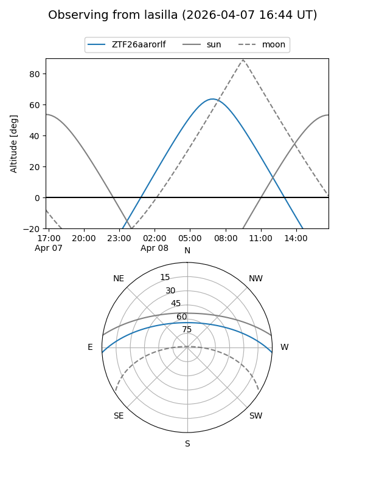
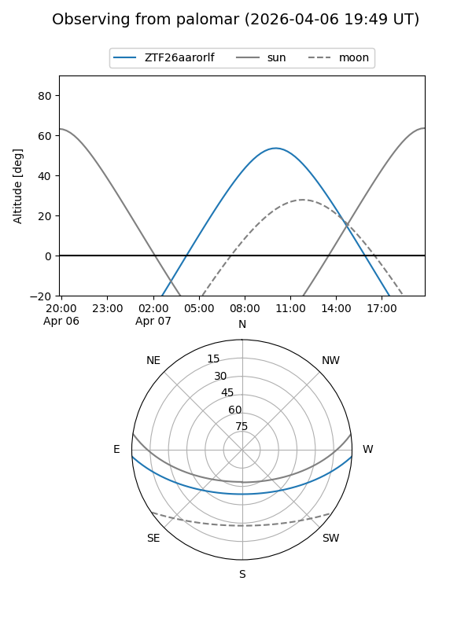

ZTF26aarorlf
Target ZTF26aarorlf at 2026-04-07 11:11
Aliases and brokers:
FINK: link
Lasair: link
ALeRCE: link
alt names
ZTF26aarorlf (ztf,fink_ztf)
Coordinates:
equatorial (ra, dec) = 229.2291,-2.86560
equatorial (HMS+DMS) = 15:16:54.99,-02:51:56.14
galactic (l, b) = (358.1599,+43.86275)
Flags:
Photometry:
last ztfg=19.50
1 ztfg detections
Lightcurve
Visibility


Additional plots